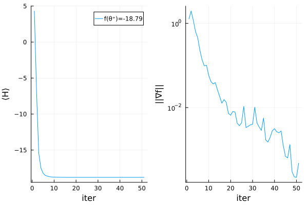

using Revise
using MajoranaPropagation
using ForwardDiff
using Optim
using Plots
using Random
Random.seed!(42)TaskLocalRNG()n_spinful_sites = 20
topo = bricklayertopology(n_spinful_sites; periodic=false)
TT = getinttype(2 * n_spinful_sites)
U = 1.
t = 1.
H = MajoranaSum(Float64, n_spinful_sites, true)
for (i, j) in topo
add!(H, :hopup, [i, j], -t)
add!(H, :hopdn, [i, j], -t)
end
for i=1:n_spinful_sites
add!(H, :nupndn, i, U)
end
#create checkerboard fock state
fock_state = FockState(n_spinful_sites, :checkerboard, true)Fock state with 20 fermions at positions
↑: 1, 3, 5, 7, 9, 11, 13, 15, 17, 19
↓: 2, 4, 6, 8, 10, 12, 14, 16, 18, 20function lossfunction_gen(thetas; H, optim_circ, fock_state, min_abs_coeff)
CoeffType = eltype(thetas)
H_param = MajoranaSum(CoeffType, H.nsites, H.is_spinful)
for (ms, coeff) in H
set!(H_param, ms, CoeffType(coeff))
end
output_H = propagate!(optim_circ, H_param, thetas; min_abs_coeff = min_abs_coeff)
return overlapwithfock(output_H, fock_state)
end
optim_circ = []
for i=1:n_spinful_sites
if i < n_spinful_sites
push!(optim_circ, FermionicRotation(:hopup, [i, i+1]))
push!(optim_circ, FermionicRotation(:hopdn, [i, i+1]))
end
push!(optim_circ, FermionicRotation(:nup, i))
push!(optim_circ, FermionicRotation(:ndn, i))
end
thetas = rand(length(optim_circ))
min_abs_coeff = 1.e-5
lossfunction = θ -> lossfunction_gen(θ; H=H, optim_circ=optim_circ, fock_state=fock_state, min_abs_coeff=min_abs_coeff)
g! = (g, θ) -> ForwardDiff.gradient!(g, lossfunction, θ)
gradtol = 1.e-6
maxiter = 50
optimizer = Optim.LBFGS()
#optimizer = Optim.GradientDescent()
thetas0 = rand(length(optim_circ))
res = Optim.optimize(lossfunction, g!, thetas0, optimizer,
Optim.Options(show_trace=true, show_every=10,store_trace=true,
g_tol=gradtol, iterations=maxiter))Iter Function value Gradient norm
0 4.308816e+00 1.270793e+00
* time: 0.04168415069580078
10 -1.876954e+01 4.178069e-02
* time: 7.574958086013794
20 -1.878864e+01 8.076498e-03
* time: 12.245573997497559
30 -1.878942e+01 1.021403e-02
* time: 17.915062189102173
40 -1.878986e+01 2.675668e-03
* time: 22.218189001083374
50 -1.878993e+01 4.778894e-04
* time: 26.933091163635254
* Status: failure (reached maximum number of iterations)
* Candidate solution
Final objective value: -1.878993e+01
* Found with
Algorithm: L-BFGS
* Convergence measures
|x - x'| = 4.88e-04 ≰ 0.0e+00
|x - x'|/|x'| = 3.78e-04 ≰ 0.0e+00
|f(x) - f(x')| = 9.53e-08 ≰ 0.0e+00
|f(x) - f(x')|/|f(x')| = 5.07e-09 ≰ 0.0e+00
|g(x)| = 4.78e-04 ≰ 1.0e-06
* Work counters
Seconds run: 27 (vs limit Inf)
Iterations: 50
f(x) calls: 54
∇f(x) calls: 54
∇f(x)ᵀv calls: 0trace = Optim.trace(res)
f_history = [t.value for t in trace]
g_norm_history = [t.g_norm for t in trace]
energy_plot = plot(f_history, xlabel="iter", ylabel="⟨H⟩", label="f(θ⁺)=$(round(Optim.minimum(res), digits=2))")
grad_plot = plot(g_norm_history, xlabel="iter", ylabel="||∇f||", label=false, yscale=:log10)
combined_plot = plot(energy_plot, grad_plot, layout=(1,2))#, plot_title="$(n_spinful) sites, t=$t, U=$U,min_abs_coeff = $min_abs_coeff")